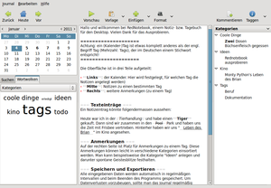
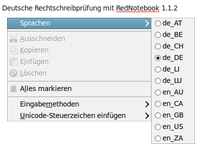
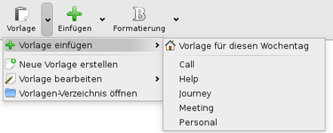
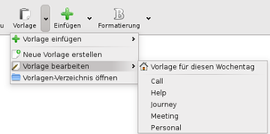
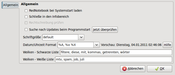

RedNotebook
Dieser Artikel wurde für die folgenden Ubuntu-Versionen getestet:
Ubuntu 16.04 Xenial Xerus
Ubuntu 14.04 Trusty Tahr
Zum Verständnis dieses Artikels sind folgende Seiten hilfreich:
RedNotebook  ist ein digitales Tagebuch mit integriertem Kalender. Gerade wenn eigene Notizen bewusst chronologisch geordnet bzw. strukturiert werden sollen, ist das Programm empfehlenswert. Als plattformübergreifendes Programm steht es neben Linux auch für Windows (inklusive einer portablen Version ) und Mac OS X zur Verfügung. Das ursprünglich englische Programm ist inzwischen in über 20 Sprachen übersetzt worden.
ist ein digitales Tagebuch mit integriertem Kalender. Gerade wenn eigene Notizen bewusst chronologisch geordnet bzw. strukturiert werden sollen, ist das Programm empfehlenswert. Als plattformübergreifendes Programm steht es neben Linux auch für Windows (inklusive einer portablen Version ) und Mac OS X zur Verfügung. Das ursprünglich englische Programm ist inzwischen in über 20 Sprachen übersetzt worden.
Funktionen:
Textformatierungen: fett, kursiv, unterstrichen oder
durchgestrichenEinfügen von Bildern, Dateien und Internet-Adressen (Links)
Internet- und E-Mail-Adressen werden automatisch als Links erkannt
Schlagwörter (Tags) 
Suchfunktion
integrierte Rechtschreibprüfung
Automatisches Speichern
Export als HTML, PDF, LaTeX oder Nur-Text
Datensicherung (ZIP Archiv)
Wortwolken für häufig benutzte (Schlag-)Wörter
Vorlagen (Templates)
Alle eingegebenen Daten werden in reinen Textdateien gespeichert. Eine Datenbank wird nicht benötigt. In der Konzeption sehr ähnlich ist das Programm Lifeograph. Der Hauptunterschied ist die im Gegensatz zu Lifeograph fehlende Verschlüsselung. Weitere Alternativprogramme sind im Artikel Notizen zu finden, insbesondere im Abschnitt Outliner.
Installation¶
 Das Programm ist in den offiziellen Paketquellen enthalten. Folgendes Paket muss installiert [1] werden:
Das Programm ist in den offiziellen Paketquellen enthalten. Folgendes Paket muss installiert [1] werden:
rednotebook (universe)
 mit apturl
mit apturl
Paketliste zum Kopieren:
sudo apt-get install rednotebook
sudo aptitude install rednotebook
Optional kann eine integrierte Rechtschreibprüfung installiert werden:
| Integrierte Rechtschreibprüfung | |
| ab Ubuntu 14.10 | bis Ubuntu 14.04 |
Paketliste zum Kopieren: sudo apt-get install python-gtkspellcheck
sudo aptitude install python-gtkspellcheck
|
Paketliste zum Kopieren: sudo apt-get install python-gtkspell
sudo aptitude install python-gtkspell
|
PPA¶
Die jeweils aktuellste Version ist über ein "Personal Package Archiv" (PPA) [2] erhältlich.
Adresszeile zum Hinzufügen des PPAs:
ppa:rednotebook/stable
Hinweis!
Zusätzliche Fremdquellen können das System gefährden.
Ein PPA unterstützt nicht zwangsläufig alle Ubuntu-Versionen. Weitere Informationen sind der  PPA-Beschreibung des Eigentümers/Teams rednotebook zu entnehmen.
PPA-Beschreibung des Eigentümers/Teams rednotebook zu entnehmen.
Damit Pakete aus dem PPA genutzt werden können, müssen die Paketquellen neu eingelesen werden.
Nach dem Aktualisieren der Paketquellen kann das Programm wie oben angegeben installiert werden.
Verwendung¶
Bei Ubuntu-Varianten mit einem Anwendungsmenü erfolgt der Programmstart über den Menü-Eintrag "Büro -> RedNotebook". Beim Start des Programms ist automatisch der aktuelle Tag ausgewählt. Bereits enthalten sind englische Beispieldaten mit Erläuterungen zur Programmnutzung, die den Einsteig erleichtern sollen.
Hinweis:
Beim Begriff "Tag" ist zwischen zwei Bedeutungen zu unterscheiden: im Deutschen handelt es sich um einen Kalendertag, der engl. Begriff Tag (Mehrzahl: Tags) meint ein Schlag- bzw. Stichwort.
Mittels einer integrierten Vorschau lässt sich schnell zwischen dem Eingabe-Modus und dem Endergebnis umschalten. Für weitere Details zur Programmnutzung wird auf die Beispieldaten verwiesen, die direkt – ohne den Umweg über diese Seite – innerhalb des Programms direkt verfügbar sind. Darüber hinaus bietet das Handbuch zum Programm, erreichbar über den Menü-Eintrag "Hilfe -> Inhalt" oder
Strg +
H , weitere Tipps und Informationen.
Hinweis:
Wer eine deutsche Übersetzung bevorzugt, kann sich die Datei JJJJ-MM.txt  herunterladen und im entsprechenden Ordner (siehe Speichern) ablegen bzw. eine vorhandene Datei ersetzen. Der Dateiname ist dabei durch das aktuelle Jahr und den aktuellen Monat zu ersetzen (z.B. 2011-01.txt). Dann sind die Beispieldaten beim nächsten Programmstart direkt innerhalb des aktuellen Monats (1. bis 4. Tag) verfügbar.
herunterladen und im entsprechenden Ordner (siehe Speichern) ablegen bzw. eine vorhandene Datei ersetzen. Der Dateiname ist dabei durch das aktuelle Jahr und den aktuellen Monat zu ersetzen (z.B. 2011-01.txt). Dann sind die Beispieldaten beim nächsten Programmstart direkt innerhalb des aktuellen Monats (1. bis 4. Tag) verfügbar.
Da sich unter Umständen Überschneidungen mit eigenen Einträgen ergeben, kann der Dateiname bei Bedarf auch einen Monat zurückdatiert werden.
Textformatierung¶
Textformatierungen sind mittels einer einfachen, Wiki-ähnlichen Syntax möglich:
| Textformatierungen | |
| Syntax | Ergebnis |
**Text** | Text (fett) |
//Text// | Text (kursiv) |
__Text__ | Text (unterstrichen) |
--Text-- | |
''<font color="red">Text</font>'' | Text (weitere Farben mit yellow, green, blue usw.) |
``Text`` | Text (Code). Codeblöcke sind ebenfalls möglich, siehe Handbuch. |
%Text | Text (unsichtbarer Text). Das Prozentzeichen muss sich am Zeilenanfang befinden. |
Bilder, andere Dateien, Internet-Adressen (URLs) und anderes lassen sich mit der Listenauswahl der Schaltfläche "Einfügen" oberhalb des Textbereichs hinzufügen. Eine Ausnahme stellen Ordner dar, die aber mit [Eigene Dateien ""file:///home/Benutzername/""] trotzdem eingebunden werden können.

Rechtschreibprüfung¶
Eine Rechtschreibprüfung ist nur unter Linux vorhanden. Voraussetzung sind die Pakete python-gtkspell bzw. python-gtkspellcheck. Nun muss in den Programm-Einstellungen die Rechtschreibprüfung noch aktiviert werden. Anschließend kann man bei der Eingabe über die rechte Maustaste  die gewünschte Sprache auswählen.
die gewünschte Sprache auswählen.
Speichern¶
Der Speicherort der Einträge kann selbst bestimmt werden. Zum Verständnis wichtig: das Programm erwartet einen Ordnernamen, keinen Dateinamen! Standard ist ~/.rednotebook/data/, genauso gut wäre aber z.B. ~/Dokumente/Tagebuch/ möglich. In diesem Ordner wird automatisch für jeden Monat eine entsprechende Textdatei nach dem Muster JAHR-MONAT.txt angelegt oder konkret 2011-01.txt für Notizen im Januar 2011.
Dieser Ordner lässt sich mit Cloud-Diensten wie z.B. Dropbox auch über mehrere Rechner synchronisieren.
Vorlagen (Templates)¶
Bei den Vorlagen handelt es sich um Textbausteine, die über das Symbolleistenmenü gewählt und an der aktuellen Cursorposition eingefügt werden. Das Erstellen und Bearbeiten erfolgt über das gleiche Menü. Abgespeichert werden diese in Dateien (Standard: ~/.rednotebook/templates/). Es können dabei die bekannten Textformatierungen verwendet werden. Die Einträge in der Auflistung entsprechen dem jeweiligen Dateinamen und werden alphabetisch dargestellt.
Eine Besonderheit stellt dabei die automatisch verwendete Vorlage zum aktuell gewähltem Wochentag dar, anwendbar über den Menüeintrag "Vorlage für diesen Wochentag". Die Wochentag-Bausteine sind ebenfalls im Vorlagenordner zu finden. Dabei steht 1.txt für Montag, 2.txt für Dienstag usw.
|  |
| Vorlage einfügen |
|  |
| Vorlage bearbeiten |
Export¶
Um eigene Notizen umzuwandeln und/oder anderen zur Verfügung zu stellen, stehen folgende Formate zur Verfügung:
Durch den eigentlichen Exportvorgang führt ein übersichtlicher Assistent, der auch einen teilweisen Export ermöglicht.
Drucken¶
Im Programm ist keine Druckfunktion enthalten. Wer eine "Kopie aus toten Bäumen" benötigt, muss zuerst exportieren. Dann kann der formatierte Export mit einem Webbrowser (bei HTML) oder mit einem PDF-Betrachter ausgedruckt werden.
Tastenkürzel¶
| Tastenkürzel | |
| Taste(n) | Aktion |
| Strg + P | Vorschau an/aus |
| Strg + F | Suchen |
| Strg + Bild ↓ | Zum vorherigen Kalendertag |
| Strg + Bild ↑ | Zum nächsten Kalendertag |
| Strg + D | Datum und Uhrzeit einfügen |
| Strg + L | Link einfügen |
| Strg + T | Stichwort (Tag) einfügen |
| Strg + N | neue Kategorie |
| F11 | Vollbild |
Konfiguration¶
 Die Einstellungsmöglichkeiten über "Bearbeiten -> Einstellungen" oder Strg + Alt + P halten sich in Grenzen und sind nebenstehender Abbildung zu entnehmen. Diese Einstellungen werden in der Datei ~/.rednotebook/configuration.cfg gespeichert.
Problembehebung¶
 Bei Problemen kann es sinnvoll sein, in der Datei ~/.rednotebook/rednotebook.log nachzuschauen, ob dort eine entsprechende Fehlermeldung zu finden ist.
Bei Problemen kann es sinnvoll sein, in der Datei ~/.rednotebook/rednotebook.log nachzuschauen, ob dort eine entsprechende Fehlermeldung zu finden ist.
Listen¶
Verwendet man (verschachtelte) Listen unter Verwendung der Zeichen - (Bindestrich; am Zeilenanfang) oder + (nummerierte Listen), so wird unter Umständen nachfolgender Text nicht mehr ausgerückt. Daher sollte unbedingt darauf geachtet werden, nach jeder Liste mindestens 2 Leerzeilen (2x ⏎ ) einzufügen.
Internet-Adressen¶
URLs sind grundsätzlich immer inklusive des Protokolls (z.B. http:// oder mailto:) anzugeben, wenn man sie direkt aufrufen bzw. anklicken möchte. Beispiele:
falsch:
www.ubuntuusers.derichtig:
http://www.ubuntuusers.deoder[www.ubuntuusers.de ""http://www.ubuntuusers.de""]
Bilder¶
Wenn man Bilder einbindet, werden nur Verknüpfungen zu den Originaldateien erstellt. Möchte man Notizen inkl. der eingebundenen Bilder portabel halten, sollte man Bilder vorher in den Datenordner speichern und erst dann einbinden.
Notizen schützen¶
Das Programm enthält weder einen Passwortschutz noch eine Verschlüsselung, um Tagebuch-Einträge vor den Blicken Fremder zu schützen. Der Programmautor empfiehlt für diesen Zweck TrueCrypt, das ebenfalls plattformübergreifend verfügbar ist. Dazu kann als Speicherort ein verschlüsselter TrueCrypt Container (als Ordner) festgelegt werden.
Alternativ kann man einen Blick auf den Gliederungseditor NoteCase werfen, der eine integrierte Verschlüsselung besitzt.
 - heise Open Source, 11/2012
- heise Open Source, 11/2012 Übersichtsartikel
Übersichtsartikel- Erstellt mit Inyoka
-
 2004 – 2017 ubuntuusers.de • Einige Rechte vorbehalten
2004 – 2017 ubuntuusers.de • Einige Rechte vorbehalten
Lizenz • Kontakt • Datenschutz • Impressum • Serverstatus -
Serverhousing gespendet von